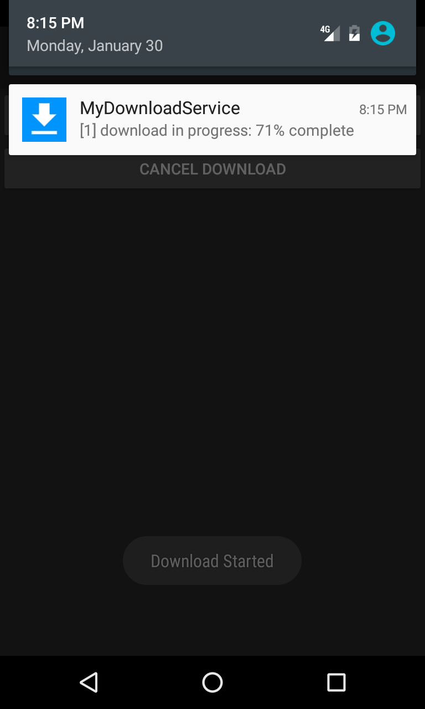

Duration
20 minutes
Goals
The primary goal of this lab is to elevate a service to foreground to increase resiliency. As a requirement of a foreground service, we will also display and update a notification.
Required assets
This lab is a continuation of the previous lab. You may use your existing solution or use the Completed solution in the Exercise 2 folder. The provided Exercise 3 folder contains a subfolder named Completed with a solution you can use to check your work. Please make sure you have these folders before you begin.
Challenge
You'll elevate a service to foreground. This requires you to display a notification. You'll also update the notification to indicate progress and respond to taps on the displayed notification.
- Open the completed solution from the previous exercise and open MyDownloadService.cs.
- Create a helper factory method that accepts string content and a pending intent, and returns a notification.
- In
OnStartCommand, callStartForegroundusing the helper method and the pending intent. - in
OnStartCommand, update the notification in each iteration of the for loop and display the current progress. - Add a
PendingIntentfield and initialize it inOnCreateto launchMainActivityusing theGetActivityfactory method. Update the notifcation factory method to add the pending intent. - Run the application, start the download service, and click the notification to return to the app.
Steps
Create a Notification
We'll need to create a notification to elevate the service to foreground. We also create new notifications when updating so we'll create a helper notification factory method.
- Open the completed solution from the previous exercise and open MyDownloadService.cs.
- Create a new method named GetNotification that returns a
Notificationand accepts astringparameter named content. - Instantiate a new
Notification.Builder. Note: Because of changes in Android Oreo (API level 26), you will have to use two different constructors, depending on the version of Android you are running on your device or emulator. - Use the fluent API to customize the notification builder:
- On Android Oreo and newer, call
CreateNotificationChannel()on theNotificationManagerinstance to create a category for the notification.NotificationManagercan be accessed as a system service using(NotificationManager)GetSystemService(Context.NotificationService). - Call
SetContentTitleon theNotificationinstance to set the title - this call returns a new/updatedNotificationinstance. - Call
SetContentTexton the instance, pass in thestringcontent argument. - Call
SetSmallIconon the instance to set the icon, pass inResource.Drawable.icon.
- On Android Oreo and newer, call
- Finally, call
Buildon the notification builder to create aNotification. - Return the notification.
Elevate the service to foreground
- Define a
constintfield named NotificationId and set it to any non-zero value. - In
OnStartCommand, use theGetNotificationhelper method to create aNotification, passing in "Download started" as the content. - Call
StartForegroundpassing in the notification id and the notification. - Run the application, start the service and observe the notification. Try clicking on the notification.
class MyDownloadService : Service
{
const int NotificationID = 10000;
...
}
Update the notification
We'll create another helper method that can be used to update the notification. This requires using the NotificationManager.
- Copy and paste the code for the
UpdateNotificationmethod. - Inspect the code: Notice we're again passing in content as a string. Internally the method uses the
NotificationManagerto replace the existing notification using the same notification id. - In
OnStartCommand, find the for-loop; update the notification usingUpdateNotificationon every iteration, passing in the current progress. - Run the application, start the service and observe the notification.
void UpdateNotification(string content)
{
var notification = GetNotification(content);
NotificationManager notificationManager = (NotificationManager)GetSystemService(Context.NotificationService);
notificationManager.Notify(NotificationID, notification);
}
Respond to taps on the notification
To add behavior to a notification we use a pending intent which encapsulates an intent that defines the behavior. In this case, to launch MainActivity.
- Create a
PendingIntentfield named pendingIntent. - In
OnCreate, create anIntentto launch MainActivity - set the Type argument in the constructor totypeof(MainActivity) - Use
PendingIntent.GetActivityto instantiate the field; pass this for the context parameter, 0 for requestCode, theIntentfor intent and 0 for flags. - In
GetNotification, add an additional fluent call to assign the pending intent:
CallSetContentIntenton the instance passing in pendingIntent. This sets the behavior of the notification when tapped to open MainActivity. - Run the application, start the service and tap on the notification.
Summary
In this exercise, you elevated a service to foreground, updated the notification and added behavior.